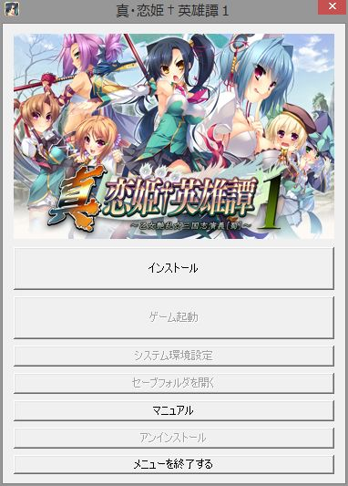

| ◆インストールと起動◆ |
|
|---|---|
| ■ＤｉｒｅｃｔＸ９.０ｃ及びゲーム本体のインストール方法 | |
| 当ゲームはＤｉｒｅｃｔＸ９.０ｃを使用しております。 ご使用になる環境にＤｉｒｅｃｔＸ９.０ｃがインストールされていない場合は、まずＤｉｒｅｃｔＸ９.０ｃをインストールして下さい。 なお表記上は「ＤｉｒｅｃｔＸ９.０ｃ」となっていても、リビジョンの差により内部ファイルに違いがございます。 本ゲームが起動しなかったり、動作がおかしい場合には、既にＤｉｒｅｃｔＸ９.０ｃを導入されている場合でも Microsoft様より最新版のＤｉｒｅｃｔＸをインストールして下さい。 |
|
| ■起動メニュー■ | |
| 
|
|
| 【インストール】 | |
| ゲームデータをＰＣにインストールします。 インストールについての詳細は「●ゲームデータのインストール方法」を参照してください。 |
|
| 【ゲーム起動】 | |
| ゲームを起動します。 ゲームデータがインストールされていない場合は選択できません。 |
|
| 【システム環境設定】 | |
| システム環境設定を開きます。 | |
| 【セーブフォルダを開く】 | |
| セーブデータがあるフォルダを開きます。 | |
| 【マニュアル】 | |
| 電子マニュアルを開きます。 システム環境設定及びゲーム環境設定については、この電子マニュアルを参照してください。 |
|
| 【アンインストール】 | |
| ゲームデータをＰＣから削除します。 |
|
| 【メニューを終了する】 | |
| 起動メニューを終了させます。 |
|
|
|
|
| ●ゲームデータのインストール方法 | |
| 1.インストールを開始する前に起動中のプログラムがあれば、それら全てを終了させてください。 2.ゲームフォルダ内の「Setup.exe」を起動していただくと自動的に起動メニューが起動します。 3.起動メニューの『インストール』ボタンを押すと、 インストーラーが起動しますので、画面の指示に従ってインストールを行ってください。 ※Windows Vista/7 へのインストールについて ●管理者(Administrator)権限を持つ場合 起動メニューの『インストール』ボタンを押すと、『ユーザーアカウント制御』によって「認識できないプログラムがこのコンピュータへのアクセス を要求しています」というダイアログボックスが表示されることがあります。 その場合、『許可』を選択してください。 ●管理者(Administrator)権限を持たない場合 “真・恋姫†英雄譚１をインストールします”と表示され。『次へ』を押すと、
と注意事項が表示されます。 管理者権限を持たない場合、Program Files 等のシステムフォルダ下にインストールを行うと、インストールエラーが発生します。 その場合は、再度インストールを実行し、システムフォルダ以外の場所にインストールを行って下さい。 ※ご注意※ この注意事項は、管理者権限を持たないとインストール出来ないという意味ではありません。システムフォルダ以外のフォルダには (例:[C:/\BaseSon\真・恋姫†英雄譚１]等)インストールすることが出来ます。 |
|
| ■ゲームの起動 | |
| インストールが正常に終了したのちに[スタートメニュー]-[BaseSon]-[真・恋姫†英雄譚１]-[真・恋姫†英雄譚１]を選択するか、デスクトップのショートカットを選択し、[起動メニュー]から、[ゲーム起動]を選択してください。 ※ゲーム起動時にゲームの解像度が合わない場合 起動メニューのシステム環境設定を押していただき、表示１から適切なウインドウサイズをお選びください。 ※ウインドウモードに設定していても、強制的にフルスクリーンになる場合 ゲームのウインドウサイズがモニターの解像度よりも大きい場合、強制的にフルスクリーンになる場合があります。 ウインドウモードを保ちたい場合は「ウインドウモード時のウインドウサイズ制限を行う」のチェックを外してください。 |
|
| ■ゲーム本体のアンインストール方法 | |
| ゲームフォルダ内にある「Setup.exe」から起動メニューを開いていただき、その中にある[アンインストール]の項目を選択してください。 また、[コントロールパネル]-[プログラムと機能](WindowsXP の場合は[プログラムの追加と削除])からもアンインストールができます。 ※Windows Vista/7 上のアンインストールについて ●管理者(Administrator)権限を持つ場合 アンインストールを行おうとすると、『ユーザーアカウント制御』によって「認識できないプログラムがこのコンピュータへアクセスを要求しています」 というダイアログボックスが表示されることがあります。その場合、『許可』を選択してください。 ●管理者(Administrator)権限を持たない場合特別な動作はありません。 『ゲームのアンインストール』の項目にしたがってアンインストールを行って下さい。 |
|